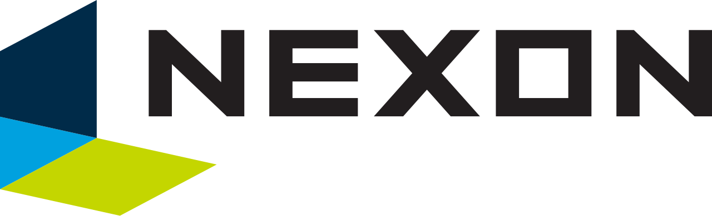
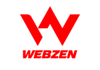
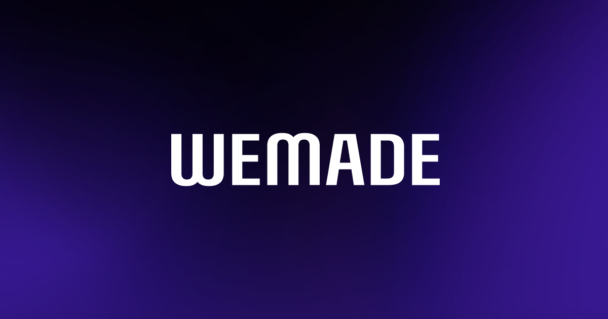

홈 > 브랜드 매거진 > 넥슨
넥슨
넥슨(Nexon)은 1994년 김정주가 설립한 한국 출신의 비디오 게임 개발·퍼블리싱 기업으로, 메이플스토리·던전앤파이터 등으로 알려져 있다.
산업 분야 미디어·엔터테인먼트 · 공개 등급 자료 기반 · 브랜드 평가 4.5 ★

한눈에 보는 브랜드
넥슨(Nexon Co., Ltd.)은 1994년 서울에서 김정주가 설립한 비디오 게임 기업으로, 2005년 본사를 도쿄로 옮기고 도쿄 증시에 상장했다.
브랜드 관점
세계 최초의 그래픽 MMORPG를 상용화한 한국 게임의 개척자로, 던전앤파이터·메이플스토리 등 장수 IP를 거느린 국내 매출 1위 게임사다.
시작과 성장
1994년 김정주가 설립했다. 1996년 세계 최초 그래픽 MMORPG '바람의 나라'를 상용화했고, 2005년 네오플(던전앤파이터)을 인수했으며, 2011년 일본 도쿄증권거래소에 상장했다.
브랜드 아이덴티티
온라인 라이브 서비스 게임의 선구자로, 메이플스토리(MapleStory)와 던전앤파이터(Dungeon & Fighter) 등 장수 온라인 게임으로 세계적 성공을 거뒀다.
제품과 서비스
바람의 나라, 메이플스토리, 던전앤파이터, FC온라인, 서든어택, 블루아카이브, 데이브 더 다이버, 퍼스트 디센던트 등 온라인·모바일 게임을 개발·퍼블리싱한다.
사람들
현재 상태
일본 상장 법인 기준 2024년 한국 게임사 최초로 연 매출 4조 원대에 진입했고, 국내 게임사 매출 1위를 지키고 있다.
타임라인
정리된 연도형 이벤트가 없습니다.
BI/CI 변천사
함께 읽을 브랜드

미디어·엔터테인먼트 · 자료 기반웹젠웹젠(Webzen)은 2000년 설립된 한국의 게임 기업으로, 3D MMORPG 뮤 온라인(MU Online)으로 알려져 있다.
 미디어·엔터테인먼트 · 자료 기반스마일게이트
미디어·엔터테인먼트 · 자료 기반스마일게이트스마일게이트(Smilegate)는 2002년 권혁빈이 설립한 한국의 게임 기업으로, 크로스파이어와 로스트아크로 알려져 있다.
미디어·엔터테인먼트 · 자료 기반하이브하이브(HYBE)는 방탄소년단(BTS)으로 알려진 한국의 대표 엔터테인먼트 기업으로, 2005년 빅히트 엔터테인먼트로 설립돼 2021년 하이브로 사명을 바꿨다.
 미디어·엔터테인먼트 · 자료 기반엔씨소프트
미디어·엔터테인먼트 · 자료 기반엔씨소프트엔씨소프트(NCSoft)는 1997년 김택진이 설립한 한국의 게임 기업으로, MMORPG 리니지로 잘 알려져 있다.
미디어·엔터테인먼트 · 자료 기반펄어비스펄어비스(Pearl Abyss)는 2010년 설립된 한국의 게임 기업으로, 검은사막(Black Desert)으로 알려져 있다.
미디어·엔터테인먼트 · 자료 기반그라비티그라비티(Gravity)는 라그나로크 온라인(Ragnarok Online)으로 유명한 한국의 게임 기업으로, 2000년 설립됐다.

미디어·엔터테인먼트 · 자료 기반위메이드위메이드(Wemade)는 2000년 박관호가 설립한 한국의 게임 기업으로, 미르의 전설 시리즈로 알려져 있다.
 미디어·엔터테인먼트 · 자료 기반컴투스
미디어·엔터테인먼트 · 자료 기반컴투스컴투스(Com2uS)는 1998년 설립된 한국의 모바일 게임 기업으로, 서머너즈워(Summoners War)로 잘 알려져 있다.